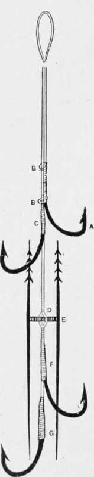

Section VI. Tackle For Mid-Water Fishing
Description
This section is from the book "American Game Fishes", by W. A. Perry. Also available from Amazon: American Game Fishes: Their Habits, Habitat, and Peculiarities; How, When, and Where to Angle for Them.
Section VI. Tackle For Mid-Water Fishing
Tackle For Trolling. Artificial Bait
The etymology of the word "trolling" need not concern us very much here, beyond pausing to sa)' that it is evidently derived from the French troler, to lead about. Trolling may be defined in this connection as fishing in mid-water with lure, natural or artificial, using a running line in doing so, and so manipulating the bait as to keep it constantly trolling or moving about. Fish of prey, such as Salmon, Trout, Bass, and the Esocidoe, are thus killed by the angler.
Fig- 36.
Fig- 37.
I shall first refer to artificial baits. The spoon is without question the chief of those, and in its thousand-and-one modifications is invariably a successful lure. It would be invidious to single out special makes as being superlatively superior. Competition looks-after the quality, and reliable tackle-sellers keep good goods. "Cheap," in reference to spoons, infallibly means "nasty."
Fig. 35 represents the orthodox spoon-bait. The attractiveness of this is enhanced by adding tufts of gaudy feathers, and therefore American ingenuity has improved on the original plain spoon of Britain, and we find a combination spoon, as shown at fig. 36, is preferred by trollers for Mascalonge or Pikerel or (Pike).
The difficulty with spoon-trolling is, that the hooks being necessarily so exposed, they catch into weeds and grass with annoying frequency. This has been obviated by the device shown in fig. 37; 1 and 2 and 3 are each arrangements for deflecting or throwing off the weeds, 3 being a flattened bar protecting the point. As it is of spring-steel, it fits, with a slight degree of tension, against the point; and the impact of soft weeds is not sufficiently strong to force it away from the guarded hook, whilst the spring is not strong enough to prevent the fish being hooked as the bait is seized. This arrangement must be seen to be appreciated. It is patented by the Syracuse Fish.
Fig. 38. Rod Co., N.Y.
Another novelty, of an exceedingly effective form, is made by the same firm, and I give it place because I have personally proved its efficacy. It is shown at fig. 38. When the flanges are spinning, they represent, from below, a bright and multi-moving fish. The dotted lines in the diagram show the outline. This is a genuine improvement. Of the distinctly artificial, or rather "fancy" baits, the trolling-fly deservedly stands amongst the first. These are made of the ordinary material, as a general thing, andsome times a small spoon is placed above them, to their great improvement. But the ordinary fur-and-feather fly is too frail for the teeth of fierce predaceous fish, coming at it with a tiger's dash, and the result is great destruction to one's tackle, in an ordinarily good day's fly-trolling. I make most of my trolling-flies so as to be practically indestructible. The body is of silk, covered over with transparent Tarpon scale-membrane, and the wings of the membrane also. This being, thickness-for-thickness, the toughest skin in the world, baffles even the destroying fangs of the Pickerel, and absolutely defies the horrent teeth of the Bass. Of course the material can be dyed any color deemed necessary.
Fig. 39.
Artificial frogs, helgramites, and the various abominations termed "luminated" baits-that is, baits smeared with Bal-main's Luminous paint-need not here be recounted. I have undertaken only to tell of those baits I consider best-without fear or favor.
Of course the novice can manufacture his spoons, if he can afford to buy a stamping apparatus. It is improbable that he can do so, however, and I think he would find a difficulty in getting the spoons separate from the gearing-at least in this country. He can, however, make the flat-metal baits, such as that figured in fig. 39. It is termed "James' trolling bait." A consists of tinned coper, or tin only, and at the head and tail are soldered two loops through which a long-shanked hook is passed. Two beads of solder are fixed on the shank (see fig. 39) to retain the hook, and a swivel is entered into the loop at the end of the shank. The whole bait is simplicity itself.
Tackle For Trolling With The Natural Bait
There is always, to my mind, satisfaction in using the dead natural bait-it requires a certain art in adjusting, and the lure is certainly more in keeping with what we know of the food of the quarry. To me, an air of ghastly unreality pervades the gyrations of the glittering spoon. The fish comes up, the victim of morbid suicidal mania, rather than of healthy gormandizing. It is caught by the "giddy pleasure of the eyes, " rather than the promptings of a healthy appetite for food.
Fig. 40.
The gangs in ordinary use for trolling the " dead fish are wrong in principle, and are the same as have been used in the early days of British angling-I specially refer to the three triplet hooks and lip-hook. For these ten hooks I substitute four, and find them amply sufficient. Fig. 40 represents my device, and by practical experiment I find it superior to all others-though the "Pennell," and my "Nonpareil" run it close. [These are described later.]
Fig. 40 may be thus described: A lip-hook is tied on to good fine gimp (A), and two loops of the same material are also tied in (BB). The loose end of the gimp is now-turned back and passed through B B and a large single hook (Limerick) is whipped on to it (G) ; above this another is attached as shown (F). The barbed arrangement (E) must now be explained: It consists of two pieces of rather thick sheet-copper or brass, cut and filed into the shape shown. (If of brass it must not be hardened.) A loop is tied into the gimp at D. and the cross-piece E is placed therein as shown. An inch further up the line another hook is tied (C), and the apparatus is complete.
Fig. 42.
Fig- 43.
Fig. 44.
Continue to:
- prev: Dressings Of Salmon Flies. Continued
- Table of Contents
- next: Section VI. Tackle For Mid-Water Fishing. Continued